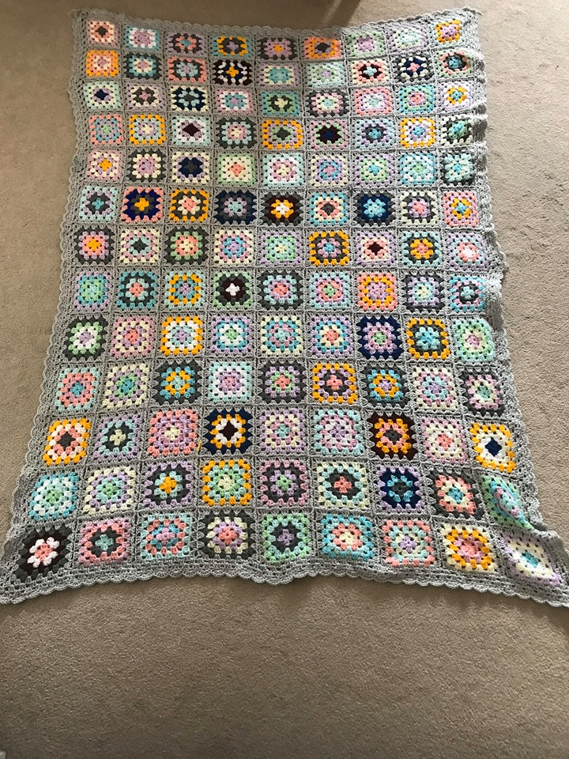

Engineering
Ladies
For this blanket I used Loops & Threads Snuggly Wuggly yarn. It is 100% acrylic and
weight 3 and evem the kitten like it. I used a size 4mm crocket hook.
The project took me countless hours over a two month
period but the result was totally worth it! The blanket is super soft and really warm. When
deciding which colours to pair together I tried to alternate between light and dark tone to give
some squares a pop. I find the darker colours stand out more so using too many together can overwhellem
the blanket. I used the pastel colours to balence out these harsh colours. Each sqaure took 20-30 minutes to make.
Granny Squares are quite easy to make and how I learnt to crocket. I did four rounds for each sqaure but its totally up to you!
My blanket is nine by eleven sqaures. I wanted it to be able to cover my whole body. In the end it is about the size of a twin
bed. Once I had made all the squares I lied them out to possition them in the way I would put them together. I found this
stressful because once I started there was no turning back. In the end I tried separate the forth colour used the most.
I found come colours like green and yellow stuck out more then others, therefore I places those far away from each othere.
I crocket the blacket together I used Loops & Treads Joy DK Yarn which was super soft and looked great. I used a ligth
grey as it was nutural and fit in really nice with my colours I used. I joined the sqaures one by one and looped them together
as I went. Once I had half the sqaures together the blanket got heacy and it was a bit hard to move it around. Assembling the blanket took a shorter
time then I thought it would. Once my blanket was together I decided to add a boarder ot finish it off. I ended up doing a wave pattern that
was super simple but really eligent. Now all there is left to do is tie in the lose strands of yarn which can take a while but you have a blanket!!

Instagram @engineeringladies